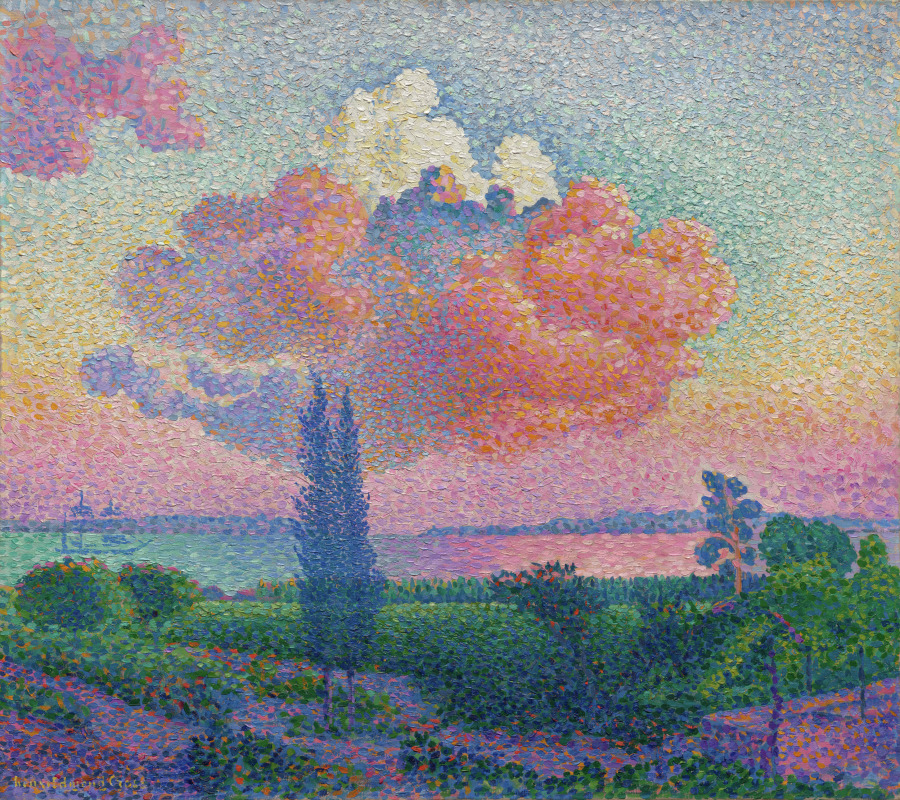

Matisse – Harmony in Red (1908)
Vivid Vermilion Red + Bright Turquoise
The famous red room with strong turquoise accents in the window view and table details. Extremely bold and happy.
Click for hex
Click for hex

Vivid Vermilion Red + Bright Turquoise
The famous red room with strong turquoise accents in the window view and table details. Extremely bold and happy.
Emerald Green + Hot Magenta Pink
Pointillist divisionism with intense green landscapes and magenta-pink flesh/nudes. Feels tropical and playful.

Vivid Cobalt Blue + Radiant Cadmium Yellow
One of the most joyful and intense still lifes Van Gogh painted during his year in Saint-Rémy. A simple earthenware vase bursts with electric cobalt-blue irises and emerald leaves against a glowing, almost fluorescent cadmium-yellow background. The complementary clash of blue and yellow creates pure visual fireworks—serene yet explosive, quiet yet screaming with life.

Cadmium Red + Cobalt Blue + Lemon Yellow
Primary colors at their most pure and punchy. Surprisingly cute because of the perfect balance.

Vivid Violet + Deep Indigo + Acid Lime Green
(The true dominant trio from the 1889 version in the Van Gogh Museum)
A hypnotic close-up of purple irises growing straight out of the garden soil. Van Gogh skips the vase entirely and paints the flowers against a raw patch of earth and sky. The petals are pure electric violet, the shadows plunge into almost black-indigo, and the leaves and stems flash with that unmistakable Van Gogh acid-lime green that makes the whole canvas vibrate like neon.

Hot Pink + Deep Magenta + Minty Spring Green
Painted as a tender tribute to Anton Mauve after his death, this is Van Gogh at his most candy-sweet and joyful. Delicate peach trees explode into clouds of bubblegum-pink and hot-magenta blossoms against a fresh mint-green sky and field. It’s pure springtime euphoria—soft yet insanely vivid, like strawberry ice cream under a lime sky.

Turquoise + Fuchsia + Lemon Yellow + Emerald Green
The painting that scandalized Paris and launched Fauvism. Matisse’s wife Amélie sits in an ordinary chair wearing an elaborate hat, but everything is transformed into pure, explosive color: her face is painted with turquoise shadows and fuchsia highlights, the hat is a riot of hot pink and emerald, and wild strokes of lemon yellow streak across the background. It’s bold, fearless, and strangely joyful—like a tropical bird exploded in the middle of a Parisian salon.

Royal Blue + Scarlet Red + Hot Pink + Lemon Yellow
Horses made of pure electric color—somehow both wild and adorable.

Fluorescent Ultramarine + Golden Wheat + Black Crows
One of Van Gogh’s final and most dramatic paintings, painted in Auvers-sur-Oise just weeks before his death. A stormy, almost electric ultramarine sky churns with thick, violent brushstrokes, pressing down on a turbulent sea of golden-yellow wheat. Three dark paths cut through the field like lost roads, and a flock of black crows rises ominously—yet the colors remain unbelievably vivid and alive, like a scream in neon. It’s apocalyptic, intense, and strangely beautiful—like the end of the world painted in candy that’s gone slightly toxic.

Hot Coral + Acid Lime + Turquoise + Magenta
Picasso painting his wife Jacqueline as a walking tropical punch bowl – pure 1950s Riviera joy.

Coral Red + Turquoise + Mango Orange + Acid Lime Green
Pure Tahitian happiness distilled into four screaming colors. Two women lounge with a playful red dog on a coral-red beach under a turquoise sky, while mango-orange figures dance in the background and acid-lime trees glow like neon. The entire canvas feels like it’s humming with heat, music, and fruit-punch sweetness—this is Gauguin at his most joyful, sensual, and color-drunk.
This painting is literally titled “Joyousness” — and the colors this saturated and happy feel like they were invented for that exact emotion.

Hot Pink Cloud + Turquoise Sea + Lemon Yellow Beach + Lime Trees
A sunset that looks like cotton candy exploded over the French Riviera.

Vivid Scarlet Poppies + Ultramarine Sky + Emerald Green Grass + Lemon Yellow Highlights
The ultimate Monet color bomb: an endless sea of electric-red poppies explodes across the canvas, set against a perfect cobalt-and-ultramarine sky. The grass is pure saturated emerald, and tiny lemon-yellow wildflowers and Camille’s parasol pop like candy sprinkles. Painted en plein air on a perfect summer day, it’s so bright and joyful it feels like the sun itself is screaming in happiness.

Emerald Green + Hot Magenta + Scarlet Red + Bright Orange + Lemon Yellow + Cobalt Blue
Klimt sprinkles vivid orange marigolds, nasturtiums, and tiger-lily flashes throughout the canvas. They act like little firecrackers among the cooler flowers and make the whole painting absolutely sing.

Pure Ultramarine “IKB” (International Klein Blue)
It isn’t “just blue.” Yves Klein spent years searching for a blue that could carry pure spirit, a color so saturated and luminous that it feels weightless, infinite, and almost immaterial—like staring straight into the void of the sky at noon, or into the heart of a flame that forgot to burn.
He finally created IKB 191 (the exact registered pigment): an ultramarine suspended in a revolutionary synthetic resin that keeps the matte velvet texture while making the color appear to float in front of the canvas. When you stand in front of a real Klein monochrome, the surface seems to dematerialize; there’s no brushstroke, no edge, no depth cue—only pure, vibrating blue that swallows space and time. People have cried in front of them. Others say it feels like flying.
Klein called it “the most perfect expression of blue” and used it to paint pure sensation: no figures, no stories, no composition—just the color itself as the entire subject. To him, blue was freedom, infinity, the immaterial, the divine.

(That exact shade #002FA7 is International Klein Blue—he owned the formula.)